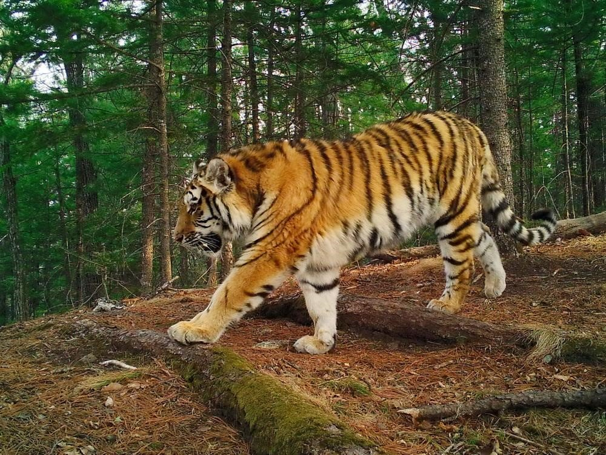
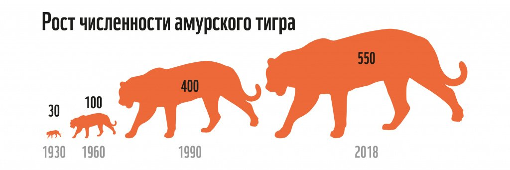
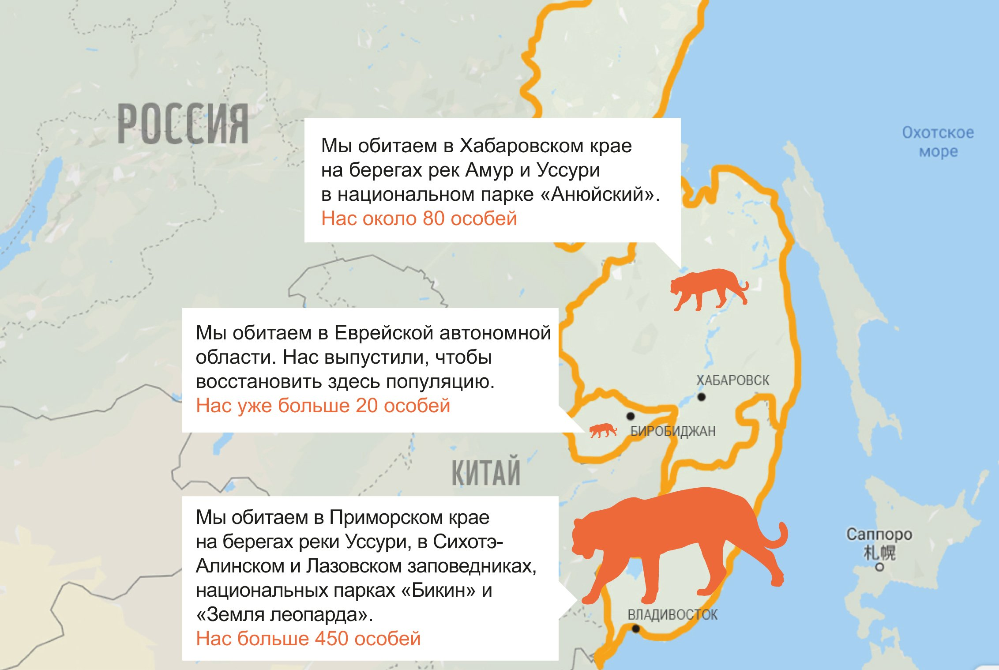
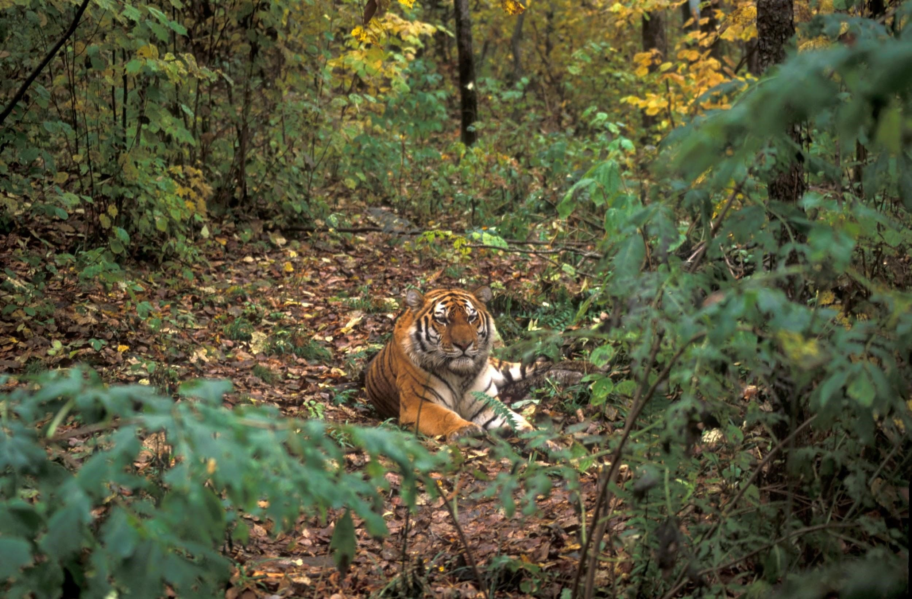
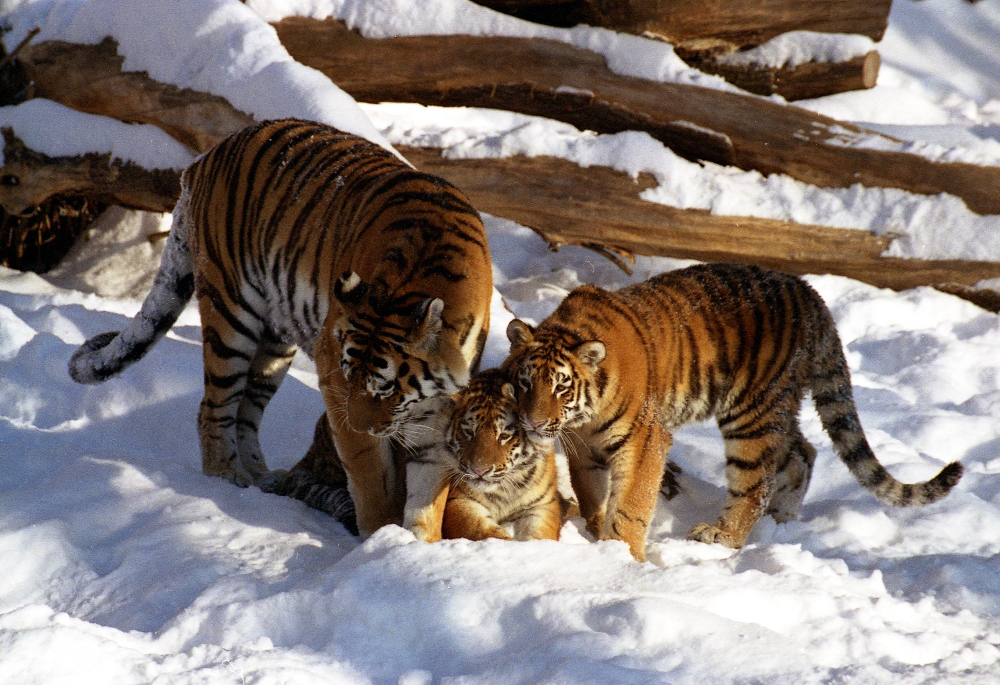

ХАРАКТЕРИСТИКА
Амурский тигр — хищник из семейства кошачьих, рода пантер, класса млекопитающих. Принадлежит к виду тигров, составляет отдельный подвид. По размеру почти как малолитражный автомобиль — 3 метра, а вес в три раза меньше — в среднем 220 кг. По природе самцы на четверть крупнее самок.
У редкого зверя густая длинная шерсть — она защищает от таежных морозов, а черные полосы на ней маскируют от недругов. Шубка амурского тигра не такая яркая и полосатая в отличие от других подвидов. Цвет зимой и летом не меняется — остается рыжим, но зимой немного светлее, чем летом. У зверя довольно широкие лапы — они помогают ходить по глубокому снегу.
Символ Дальнего Востока занесен в Международную Красную книгу. В 1930-х годах охотники истребили 97% дальневосточных тигров. Чтобы спасти зверя от исчезновения, государство запретило на него охоту, и с 1960-х годов численность стала расти. За 90 лет популяция увеличилась в 20 раз, но этого недостаточно: амурский тигр по-прежнему носит статус редкого животного.
Продолжительность жизни зависит от условий. В неволе животное проживет до 20 лет, потому что у него есть безопасный дом, еда и ветеринары. В дикой тайге нередко бывает наоборот: мороз -40°С, отсутствие животных для пропитания, борьба за свободную территорию, браконьерство. На свободе тигры проживают счастливую жизнь, но вдвое короче — примерно 10 лет. Хотя и этого достаточно, чтобы жить дольше своих собратьев по виду.
МЕСТООБИТАНИЕ
Амурский тигр обитает в южной части Дальнего Востока. Основные ареалы обитания на берегах рек Амур и Уссури в Хабаровском крае и у подножия гор Сихотэ-Алиня в Приморском крае. Также часть животных разместилась в Еврейской автономной области.
В России самая большая популяция амурского тигра — это гордость дальневосточной тайги. Среди всех подвидов тигров Россия занимает второе место — у нас 13% мировой популяции, первое место остается за Индией. Иногда амурские тигры совершают трансграничный переход: по суше или реке они попадают из России в соседние страны — Китай или на север КНДР. Но и это не мешает нашей стране лидировать по количеству особей.
ПИТАНИЕ
Тигр — вершина пищевой цепи в экосистеме уссурийской тайги. Это значит, что от его численности зависит вся дальневосточная природа: не будет тигра — не будет и природы. Чтобы этого не произошло, в местах обитания должно хватать копытных.
Основной рацион — это кабаны, пятнистые олени, изюбри и косули. Если этих животных не хватает, тигры питаются барсуками, енотами, зайцами, рыбой, а иногда заваливают медведей. В сильный голод амурские тигры нападают на домашний скот и собак. Но, чтобы быть сытым и здоровым, одному тигру все равно нужно полсотни копытных в год.
ОБРАЗ ЖИЗНИ
Амурские тигры живут годами на одной территории, если вокруг достаточно пищи. И только фактор ее отсутствия может заставить их совершить переход на другое место. Территория закрепляется за тигром пахучими метками, проскрёбами в земле и задирами на деревьях. Так чужаки если и решат зайти на его территорию, то только из-за наглого поведения — тогда произойдет драка.
Амурский тигр охотится, обходя свою территорию. Он видит жертву, подползает ближе к ней, выгибает спину и дает упор задними лапами в землю. Если удается остаться незамеченным, после прыжка хищник забирает трофей, но по статистике успешная только одна и десяти попыток.
У каждой кошки свое место: самке достаточно 20 км2, а самцу 100 км2 дальневосточной тайги. Тигрята устраиваются в скрытых от чужаков местах, которые мать обустраивает в зарослях, расщелинах и пещерах. У одного самца на территории обитают 2-3 самки с потомством.
Амурские тигры размножаются раз в два года. Через 3-4 месяца тигрица выводит от двух до четырех тигрят. Сначала мать кормит детенышей молоком, мясо они пробуют только в два месяца. Круглосуточно мать находится рядом с детьми только первую неделю, потом она отлучается на охоту. До двух лет тигрица учит малышей добывать пищу, они живут с ней. Зрелыми тигрята становятся к трем-четырем годам.
Свои эмоции животные показывают звуками и прикосновениями. Например, когда нужно поприветствовать друг друга, они ритмично выдыхают воздух ртом и носом. Чтобы показать симпатию или нежность, трутся друг о друга и мурлычат, как домашние котики. В раздражении похрипывают и тихо рычат, в ярости издают звуки, похожие на кашель.
Тигр и человек
Взаимоотношения с человеком для российских тигров сложный вопрос. С одной стороны, из-за людей они находились на грани исчезновения, но и благодаря людям популяция выросла. Рост популяции тоже вызвал вопрос: теперь зверям нужно больше места и пищи. Снова человеческая деятельность этому мешает вырубками, пожарами и браконьерством.
Из-за нехватки копытных хищники иногда приходят в поселки за скотом и собаками, чем тревожат местных жителей. С 2000 по 2016 год произошло 279 таких конфликтов, в которых погибли 33 тигра. Контакта с людьми тигры избегают: инстинкты отвечают за охоту именно на диких животных, в редких случаях — на домашних. Есть два случая, когда тигр реагирует на человека — тот ранен или ему некуда бежать.
При этом местные жители помогают тиграм, а они не трогают людей. Когда горожане встречают зверя вблизи поселений, они вызывают оперативную группу. Специалисты по минимизации конфликтов приезжают и забирают хищника в реабилитационный центр. На юге Дальнего Востока их два: «Утес» в Хабаровском крае и «Центр “Тигр”» в Приморье.
В реабилитационных центрах зверей кормят, выхаживают, но не дают привыкнуть к неволе — так они сохраняют инстинкты. Перед выпуском в дикую природу на хищников одевают GPS-ошейник: он дает возможность специалистам проследить, чтобы зверь больше не приходил к людям.
С браконьерством сложнее — за полтора века численность амурского тигра и его местообитаний сократилась на 95%. Причем любое браконьерство играет роль, будь то на тигра, на копытных или лес: незаконные вырубки уничтожают местообитания, а неограниченная охота на копытных приводят к голоду.
WWF России с другими природоохранными организациями защищают подвид от исчезновения. Например, за последние 20 лет создали охраняемые территории, антибраконьерские бригады, реабилитационные центры и мобильные госпитали. WWF России проводит программы по восстановлению численности копытных, следит за сохранностью кедровых лесов, численностью и жизнью тигров по фотоловушкам.
- Черные полосы на шкуре отличаются у каждой особи: найти двух тигров с одинаковой шубкой не получится.
- У тигра 30 зубов, как у домашнего котика.
- В приливе нежности тигр мурлычет, опровергая этим научные исследования.
- Амурский тигр — единственный подвид, который освоил жизнь в полутораметровых снегах и температуре -40°С.
- Плохое самочувствие животное лечит специальными травами из лесов и полей.
- Ночью амурские кошки видят в 5 раз лучше, чем человек.
- Тигру ничего не стоит прыгнуть на два этажа вверх — это 5-6 метров.
- Так же, как и развить среднюю скорость машины на шоссе — 80 км/ч, это еще и по снегу.
- Самый мощный тигр в мире весил 384 кг, это почти как 100 домашних кошек.